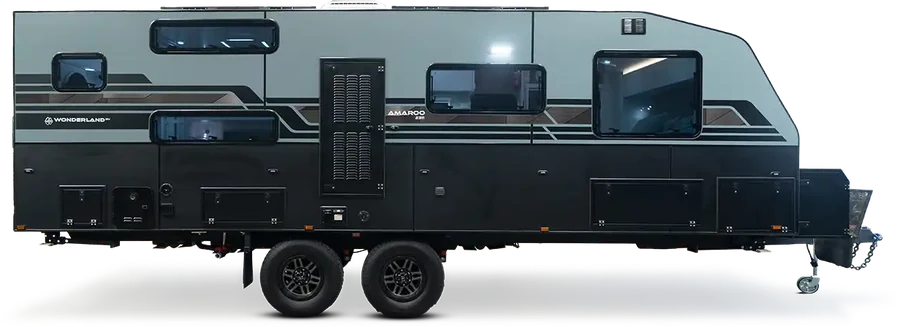
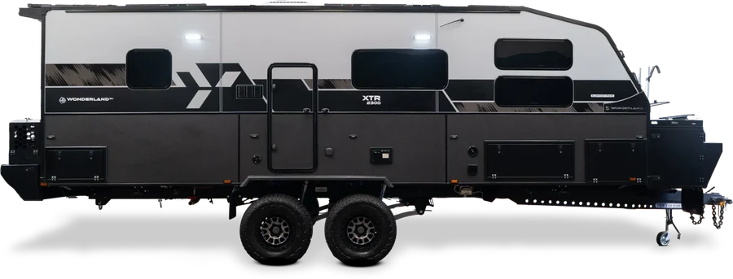
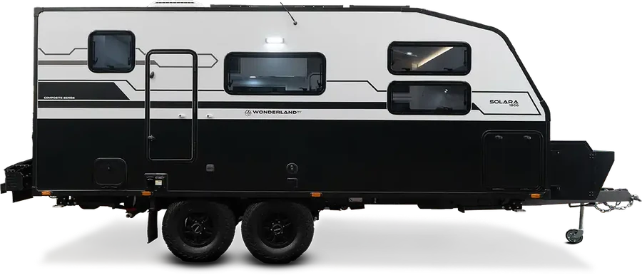
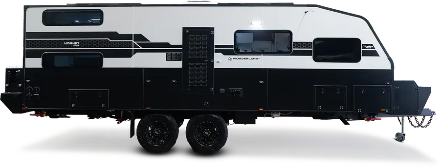

The sizes below are the real Step 3 at phone width, so you see how everything else re-spaces around the bigger circle. Nothing here is in the configurator beyond the current +20%. With "Reduce motion" on, no animation plays.
Pick one. The other elements shrink a little as the circle grows, to keep the page inside the screen and the gaps even.
Pick one (or say none). A reads as "alive", B and C read as "tap one of these to swap".


XTR
Solara
Hornet